정보처리산업기사 (2002-03-10 기출문제)
1과목: 데이터 베이스
1. DBMS의 필수기능 중 제어기능에 해당하지 않는 것은?
- 데이터모델 기술
- 무결성유지
- 보안,권한검사
- 병행 수행 제어
(정답률: 78%)

2. Which of the following is an ordered list that allinsertions take place at one end, the rear,while alldeletions take place at the other end,the front?
- Array
- Stack
- Queue
- Binary Tree
(정답률: 60%)
3. 관계 데이터 모델의 무결성 제약 중 기본키 값이 널(null)값일 수 없음을 의미하는 것은?
- 개체 무결성
- 참조 무결성
- 도메인 제약조건
- 주소 무결성
(정답률: 82%)
4. 해시(hash) 함수와 밀접한 관계가 있는 파일은?
- ISAM 파일
- VSAM 파일
- DAM 파일
- 링 파일
(정답률: 39%)
5. 전체적인 구조가 트리 형태로 되어 있고,두 레코드 타입간에는 하나의 관계만 허용되는 데이터 모델은?
- 관계 데이터 모델
- 네트워크 데이터 모델
- 계층 데이터 모델
- 객체-관계 데이터 모델
(정답률: 57%)
6. 관계 데이터 모델에 관한 용어 설명으로 옳지 않은 것은?
- 애트리뷰트(attribute)란 테이블에서 열(column)을 의미한다.
- 카디널리티(cardinality)란 릴레이션에 포함되어 있는 애트리뷰트의 수를 의미한다.
- 도메인(domain)이란 애트리뷰트가 취할 수 있는 같은타입의 모든 원자값들의 집합을 의미한다.
- 튜플(tuple)이란 테이블에서 하나의 레코드를 나타내는 행(row)을 의미한다.
(정답률: 64%)
7. 데이터베이스에서 아직 알려지지 않거나 모르는 값으로서"해당없음"등의 이유로 정보 부재를 나타내기 위해 사용하는 특수한 데이터 값을 무엇이라 하는가?
- 원자값(atomic value)
- 참조값(reference value)
- 무결값(integrity value)
- 널값(null value)
(정답률: 85%)
8. 외부 정렬(external sort)에 해당하지 않는 것은?
- balanced sort
- cascade sort
- heap sort
- polyphase sort
(정답률: 55%)
9. 논리적 데이터 모델 중 오너-멤버(owner-member)관계를가지는 것은?
- E-R 모델
- 관계 데이터 모델
- 계층 데이터 모델
- 네트워크 데이터 모델
(정답률: 71%)
10. 다음 인접 행렬(adjacency matrix)에 대응되는 그래프(graph)를 그렸을 때,옳은 것은?
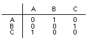
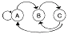
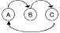
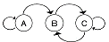
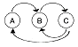
(정답률: 68%)
11. 하나 또는 둘 이상의 기본 테이블로 부터 유도되어 만들어지는 가상 테이블은?
- 뷰
- 시스템 카탈로그
- 스키마
- 데이터 디렉코리
(정답률: 86%)
12. 다음은 어떠한 정렬 방법을 설명한 것인가?
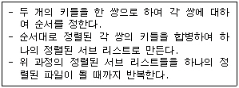
- 2-way 합병 정렬
- 퀵 정렬
- 기수 정렬
- 버블 정렬
(정답률: 64%)
13. 다음 문장의 빈칸에 적합한 용어는?
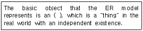
- model
- entity
- instance
- relation
(정답률: 57%)
14. 사용할 데이터베이스의 정의 및 변경을 위해서 사용하는 데이터 언어는?
- SQL
- DCL
- DML
- DDL
(정답률: 56%)
15. 선형 자료구조에 해당하지 않는 것은?
- 리스트(list)
- 큐(queue)
- 데큐(deque)
- 그래프(graph)
(정답률: 82%)
16. 정규화(Normalization)는 데이터베이스의 물리적 구조나 처리에 영향을 주지 않고 논리적 처리 및 품질에 영향을 미친다. 정규화하지 않을 경우에는 이상(anomaly)현상,즉 잠재적인 문제점들이 발생한다. 다음 중 이상 현상의 형태에 해당하지 않는 것은?
- 삽입 이상 현상
- 링크 이상 현상
- 갱신 이상 현상
- 삭제 이상 현상
(정답률: 75%)
17. 데이터베이스를 구축하는 목적과 거리가 먼 것은?
- 데이터의 일관성 유지
- 데이터의 무결성 유지
- 데이터의 중복성 유지
- 데이터의 공유
(정답률: 78%)
18. SQL의 기술이 옳지 않은 것은?
- SELECT FROM WHERE
- INSERT INTO VALUES
- UPDATE TO WHERE
- DELETE FROM WHERE
(정답률: 77%)
19. 한 프로그램에서 서브 프로그램을 Call한 후 되돌아 갈 주소를 보관할 때 사용되는 구조는?
- 스택(stack)
- 큐(queue)
- 데큐(deque)
- 트리(tree)
(정답률: 66%)
20. E-R 다이어그램의 구성요소와 표현방법이 잘못 짝지어진 것은?
- 개체 타입 -사각형
- 관계 타입 -삼각형
- 속성 -타원
- 연결 -선
(정답률: 84%)
2과목: 전자 계산기 구조
21. 논리식 Y=AB + AB'+A'B를 최소화 시킨 것은?
- AB
- A+B
- A+B'
- AB'
(정답률: 47%)
22. Compiler Language나 Assembly Language로 작성된 프로그램을 지칭할 때 옳은 것은?
- Assembler
- Object Program
- Source Program
- Operating System Program
(정답률: 36%)
23. interrupt를 발생하는 모든 장치들을 직렬로 연결하여 우선 순위를 결정하는 방식은?
- step by step 방식
- serial encoder 방식
- interrupt register 방식
- daisy-chain 방식
(정답률: 54%)
24. 레지스터에 저장되어 있는 몇 개의 비트를 1로 하기 위해서는 그 장소에 x를 가진 데이터를 y 연산을 하면된다. 이 때 x와 y는?
- x=0, y→AND
- x=1,y→AND
- x=1,y→OR
- x=0,y→OR
(정답률: 53%)
25. 컴퓨터 사용자들이 자료의 내부적 표현 방식을 이해하여 사용할 수 있을 때의 설명으로 옳지 않는 것은
- 직접 컴퓨터와 통신이 가능하다.
- 프로그래머 훈련이 필요하다.
- 프로그램 작성에 많은 시간이 소요된다.
- 디버깅(debugging)하는데 시간이 소요되지 않아 경제적이다.
(정답률: 40%)
26. OP 코드 필드(Operation Code Field)가 4비트인 인스트럭션은 몇가지 종류의 인스트럭션을 생성할 수 있는가?
- 24
- 24-1
- 23
- 23-1
(정답률: 49%)
27. 주기억장치의 속도가 CPU의 속도에 비해 현저히 늦다. 명령어의 수행 속도를 CPU의 속도와 유사하도록 하고자 할 때 사용되는 기억장치는?
- Cache 기억장치
- Virtual 기억장치
- Segment 기억장치
- 복수 모듈 기억장치
(정답률: 75%)
28. 부동소수점 표현의 수치 자료 2개에 대하여 합산을 할 때 두자료의 지수 베이스(base)는 같고,지수 크기가 다르다면 지수를 어느 쪽에 일치시켜 계산해야 하는가?
- 지수가 큰 쪽에 일치시킨다.
- 지수가 작은 쪽에 일치시킨다.
- 어느 쪽에 일치시켜도 상관 없다.
- 큰 쪽과 작은 쪽의 평균 값에 일치시킨다.
(정답률: 56%)
29. Computer system에 예기치 않은 일이 발생했을 때 제어 프로그램에게 알려주는 것을 무엇이라 하는가?
- Interrupt
- PSW(Program Status Word)
- Problem state(처리프로그램 상태)
- Program library
(정답률: 75%)
30. 메이저 상태에서 인스트럭션의 종류에 대한 판단이 이루어지는 상태는?
- fetch
- execute
- interrupt
- indirect
(정답률: 56%)
31. 전자계산기는 대별해서 중앙처리장치와 주변장치로 구분한다. 중앙처리장치의 구성 부분은?
- Input-Output,Memory,Arithmetic
- Input-Output,Control,Arithmetic
- Control,Memory,Arithmetic
- Control,Memory,Input-Output
(정답률: 43%)
32. 다음과 같은 마이크로 동작은 어떠한 명령의 수행 과정을 나타내는 것인가?
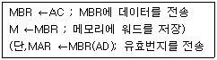
- load to AC (accumulator)
- branch unconditionally
- AND to AC
- store AC
(정답률: 38%)
33. 입출력 제어 장치의 역할이 아닌 것은?
- 데이터 버퍼링
- 제어 신호의 논리적 변환
- DMA 제어
- 제어 신호의 물리적 변환
(정답률: 35%)
34. 디스켓의 표면이 18sector 구역으로 나누어져 있고,1면에 40개의 트랙을 사용할 수 있다면, 이 디스크에는총 몇 kbyte를 저장할 수 있는가? (단,각 sector당 저장 능력은 500byte 이다. )
- 480
- 510
- 640
- 720
(정답률: 60%)
35. 인스트럭션의 연산자 부분이 나타낼 수 있는 것으로 옳지 않은 것은?
- 인스트럭션의 순서
- 인스트럭션의 형식
- 자료의 종류
- 연산자
(정답률: 17%)
36. 에러(error)를 검출 및 교정을 할 수 있는 코드는?
- BCD
- ASCII
- Hamming Code
- Excess-3 Code
(정답률: 76%)
37. 다음 중 조합 논리 회로는?
- 멀티플렉서
- 레지스터
- 카운터
- RAM
(정답률: 67%)
38. 입출력 장치와 기억장치의 데이터 전송을 위하여 입·출력 제어기가 필요한 가장 중요한 이유는?
- 동작속도
- 인터럽트
- 정보의 단위
- 메모리의 관리
(정답률: 50%)
39. interrupt에 관한 설명 중 옳지 않은 것은?
- hardware 착오시 발생된다.
- operator가 임의로 발생시킬 수 없다.
- program 착오시 발생된다.
- 주변장치의 입·출력 요청시 발생된다.
(정답률: 54%)
40. 임의접근(random access)이 가능하지 않은 것은?
- 자기 테이프(magnetic tape)
- 자기 드럼(magnetic drum)
- 자기 디스크(magnetic disk)
- 자기 코어(magnetic core)
(정답률: 52%)
3과목: 시스템분석설계
41. 새로운 시스템 완성 후에 실시되는 시스템 평가 방법으로 적당하지 않은 것은?
- 이용 부분의 만족도 분석
- 시스템 분석가의 만족도 분석
- 프로그램의 정확성과 효율성 분석
- 개발비와 운용 비용의 분석
(정답률: 42%)
42. 자료 사전(Data Dictionary)에서 반복을 의미하는 기호는?
- +
- {}
- [ ]
- ()
(정답률: 61%)
43. 보기와 같이 주로 도서 분류코드에 사용되는 코드는 ?
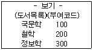
- 10진코드
- 순서코드
- 문자코드
- 분류코드
(정답률: 53%)
44. 람바우(Rumbaugh)객체 지향 분석의 모델링 방법에 해당하지 않는 것은?
- 동적(dynamic)모델링
- 클래스(class)모델링
- 객체(object)모델링
- 기능(functional)모델링
(정답률: 40%)
45. HIPO 패키지의 3단계 구성에 포함되지 않는 것은?
- 도식 목차(visual table of contents)
- 총괄 도표(overview diagram)
- 상세 도표(detail diagram)
- 구조 도표(structure diagram)
(정답률: 47%)
46. 시스템 개발주기의 시스템 개발 단계순서로 적합한 것은?
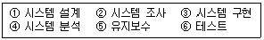
- ②④③①⑥⑤
- ②④①③⑥⑤
- ①②③④⑥⑤
- ①②④③⑤⑥
(정답률: 86%)
47. 객체지향 개념에서 이미 정의되어 있는 상위 클래스(수퍼 클래스 혹은 부모 클래스)의 메소드를 비롯한 모든 속성을 하위 클래스가 물려 받는 것을 무엇이라 하는가?
- abstraction
- method
- inheritance
- message
(정답률: 62%)
48. 부여된 코드를 실제로 사용하는 단계에서 '781356'을 '783156'으로 오류(Error)가 발생되었을 때, 어떤 오류에 해당하는가?
- Transcription Error
- Transposition Error
- Double Transposition Error
- Random Error
(정답률: 69%)
49. 전표처리에서 원장 또는 대장에 해당되는 파일로서 데이터처리 시스템에서 중추적 역할을 담당하며 기본이 되는 데이터의 축적파일은?
- 마스터 파일(Master file)
- 트랜잭션 파일(Transaction file)
- 히스토리 파일(History file)
- 섬머리 파일(Summary file)
(정답률: 61%)
50. 코드 설계의 순서가 가장 적절한 것은?
- 대상선택-코드표작성-코드설계-범위와 기간설정
- 대상선택-범위와 기간설정-코드설계-코드표작성
- 대상선택-범위와 기간설정-코드표작성-코드설계
- 대상선택-코드설계-범위와 기간설정-코드표작성
(정답률: 46%)
51. 소프트웨어 개발주기 모델의 하나인 폭포수형(waterfall) 모델에서 개발될 소프트웨어에 대한 전체적인 하드웨어 및 소프트웨어 구조, 제어구조, 자료구조의 개략적인 설계를 작성하는 단계는?
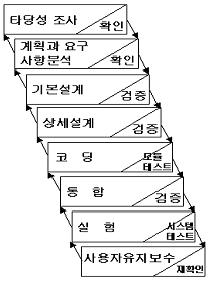
- 타당성조사 단계
- 기본설계 단계
- 상세설계 단계
- 계획과 요구사항 분석단계
(정답률: 61%)
52. 구조적 프로그램의 기본 구조에 해당하지 않는 것은?
- 순차(sequence) 구조
- 반복(repetition)구조
- 조건(condition)구조
- 입,출력(input-output) 구조
(정답률: 50%)
53. 코드의 기능으로 거리가 먼 것은?
- 식별기능
- 검색기능
- 분류기능
- 배열기능
(정답률: 41%)
54. 다른 모듈 내의 외부 선언을 하지 않은 자료를 직접 참조하므로 의존도가 대단히 높고, 순서 변경이 다른 모듈에 영향을 주기 쉬운 모듈 결합도에 해당하는 것은?
- 제어 결합
- 외부 결합
- 공통 결합
- 내용 결합
(정답률: 46%)
55. 마스터 파일 내의 데이터를 트랜젝션 파일로 추가, 정정, 삭제하여 항상 최근의 정보를 갖도록 하는 것을 무엇이라 하는가?
- 정렬(sort)
- 갱신(update)
- 병합(merge)
- 대조(matching)
(정답률: 84%)
56. 발생한 데이터를 전표상에 기록하고,일정한 시간 단위로 일괄 수집하여 입력매체에 수록하는 입력 형식은?
- 분산매체화 시스템
- 집중매체화 시스템
- 턴 어라운드 시스템(turn around)
- 온라인 단말기의 입력시스템
(정답률: 58%)
57. 컴퓨터 입력 단계의 체크 중 입력 데이터가 규정된 범위내에 수록되어 있는가를 체크하는 방법은?
- 숫자 검사(numeric check)
- 한계 검사(limit check)
- 레코드 개수 검사(record count check)
- 형식 검사(format check)
(정답률: 71%)
58. 문서화의 목적에 대한 설명으로 옳지 않은 것은?
- 시스템 개발 프로젝트 관리의 효율화
- 소프트웨어 이관의 용이함
- 시스템 유지보수의 효율화
- 시스템 개발과정의 요식행위화
(정답률: 69%)
59. 시스템의 기본 요소 중에서 처리결과를 평가하여 불충분한 경우,목적 달성을 위해 반복 처리하는 요소는?
- process
- feed back
- output
- input
(정답률: 73%)
60. 모듈의 독립성을 향상시키기 위한 결합도와 응집도는?
- 결합도는 약하고 응집도는 강해야 한다.
- 결합도는 강하고 응집도는 약해야 한다.
- 결합도와 응집도가 강해야 한다.
- 결합도와 응집도가 약해야 한다.
(정답률: 56%)
4과목: 운영체제
61. 페이지 교체 기법 중 가장 오랫동안 사용되지 않은 페이지를 교체할 페이지로 선택하는 기법은?
- LFU
- LRU
- NUR
- FIFO
(정답률: 54%)
62. 분산처리시스템을 설계하는 이유에 해당하지 않는 것은?
- 처리량 증가
- 자원공유
- 보안성 향상
- 신뢰성 향상
(정답률: 63%)
63. UNIX 파일 시스템에서 inode에 포함되는 내용이 아닌 것은?
- 파일 소유자의 사용자 식별
- 파일의 크기
- 파일이 사용된 시간대별 내역
- 파일의 내용이 담긴 디스크상의 실제 주소
(정답률: 46%)
64. 분산처리 시스템에 대한 설명으로 옳지 않은 것은?
- 한 업무를 여러 컴퓨터로 작업을 분담시킴으로서 처리량을 높일 수 있다.
- 지리적인 업무는 자체에서 처리한다.
- 분산 시스템내의 각 컴퓨터간에 자원을 공유할 수 있다.
- 사용자는 각 컴퓨터들이 어느 곳에 위치하는지 알아야 한다.
(정답률: 62%)
65. 선점형(preemption) 스케쥴링에 해당하는 것은?
- FIFO
- RR(Round Robin)
- SJF
- HRN
(정답률: 53%)
66. 하나의 프로세스가 자주 참조하는 페이지들의 집합을 무엇이라 하는가?
- locality
- working set
- segment
- fragmentation
(정답률: 73%)
67. 가변분할 다중 프로그래밍 시스템에서 하나의 작업이 끝났을 때,그 저장 장치가 다른 비어있는 저장 장소와 인접되어 있는지를 점검한다. 이 때 인접한 공백들을 하나의 공백으로 합하는 과정을 무엇이라고 하는가?
- 교체(Swapping)
- 단편화(Segmentation)
- 집약(Compaction)
- 통합(Coalescing)
(정답률: 54%)
68. 시스템에서는 어떤 자원을 기다린 시간에 비례하여 프로세스에게 우선 순위를 부여하는 에이징(aging)기법을 적용하고 있다. 이는 어떤 현상을 방지하기 위한 것인가?
- 교착상태(dead lock)
- 무한연기(indefinite postponement)
- 세마포어(semaphore)
- 임계구역(critical section)
(정답률: 43%)
69. UNIX에서 사용자 명령의 입력을 받아 시스템 기능을 수행하는 명령 해석기로서 사용자와 시스템 간의 인터페이스를 담당하는 것은?
- 커널(Kernel)
- 쉘(Shell)
- 유틸리티(Utility)
- 포트(Port)
(정답률: 60%)
70. 기억장치 관리 기법에 중요한 역할을 하며 프로세스들은 기억 장치 내의 정보를 균일하게 접근하는 것이 아니라 국부적인 부분만을 집중적으로 참조한다는 개념을 의미하는 것은?
- 참조성(Reference)
- 페이징(Paging)
- 구역성(Locality)
- 세그먼테이션(Segmentation)
(정답률: 59%)
71. 일반적(general)인 로더(loader)에 가장 가까운 것은?
- compile-and-go loader
- direct linking loader
- absolute loader
- direct loader
(정답률: 33%)
72. 교착상태(Deadlok)의 필요조건에 해당하지 않는 것은?
- mutual exclusion
- circular wait
- preemption
- hold and wait
(정답률: 53%)
73. 은행원 알고리즘(banker's algorithm)과 가장 관계가 깊은 것은?
- 교착상태 지연
- 교착상태 발견
- 교착상태 회피
- 교착상태 회복
(정답률: 60%)
74. 암호법(cryptography)과 가장 거리가 먼 것은?
- RISC(reduced instruction set computer)
- DES 알고리즘
- 공용키시스템(public key system)
- RSA 알고리즘
(정답률: 42%)
75. 기억장치 관리전략 중 최적 적합(best-fit)방법으로 배치할 때 그림에서 처럼 13K를 요구할 경우 어느 위치에 배치되는가?(오래된 자료라 그림파일이 없습니다. 2번 체크 하시면 정답 처리 됩니다.^_____^;;)
- (1)
- (2)
- (3)
- (4)
(정답률: 71%)
76. 어떤 프로세스가 실행에 필요한 수 만큼의 프레임을 갖지 못하여 빈번한 페이지 부재(page fault)의 발생으로 프로그램 수행에 보내는 시간보다 페이지 교환에 보내는 시간이 더 큰 현상은?
- 요구 페이징(demand paging)
- 스래싱(thrashing)
- 단편화 (fragmentation)
- 블록킹(blocking)
(정답률: 66%)
77. 인터럽트 종류와 발생원인에 대한 설명 중 거리가 먼 것은?
- 기계검사 인터럽트는 기계에 고장이 생겼을 때 발생한다.
- 재시작 인터럽트는 수행중인 프로세스가 0 으로 나누거나 기타 허용되지 않은 명령문을 실행할 때 발생한다.
- 외부 인터럽트는 인터럽트 시계에서 일정한 시간이 만기가 된 경우 등일 때 발생한다.
- 입출력 인터럽트는 입출력 하드웨어가 발생시킨다.
(정답률: 37%)
78. 효율적인 입출력을 위하여 고속의 CPU와 저속의 입출력장치가 동시에 독립적으로 동작하게 하여 아주 높은 효율로 여러 작업을 병행 작업할 수 있도록 해줌으로써 다중 프로그래밍 시스템의 성능 향상을 가져올 수 있게 하는방법은?
- 버퍼링
- 스와핑
- 스풀링
- 페이징
(정답률: 54%)
79. 운영체제의 기능으로 거리가 먼 것은?
- 사용자 인터페이스 제공
- 자원 스케쥴링
- 데이터의 공유
- 원시 프로그램을 목적 프로그램으로 변환
(정답률: 65%)
80. UNIX에서 파일 시스템은 어떠한 구조로 이루어지는가?
- 그래프 구조
- 계층적 트리 구조
- 배열 구조
- 네트워크 구조
(정답률: 68%)
5과목: 정보통신개론
81. 정보통신시스템의 기본 구성요소와 거리가 먼 것은 ?
- 다중변환장치
- 가입자단말장치
- 신호변환장치
- 통신제어장치
(정답률: 35%)
82. 네크워크 종단(end)시스템간의 데이터를 일관성있게 전송해 주는 OSI 계층은 ?
- 응용계층
- 네트워크계층
- 트랜스포트계층
- 물리계층
(정답률: 50%)
83. 인터넷에서 사용하고 있는 통신용 프로토콜은 ?
- IEEE 802
- TCP/IP
- CAT 5
- 10 Base T
(정답률: 67%)
84. 다음 중 발신가입자로부터 수신자까지의 모든 전송,교환과정이 디지털방식으로 처리되며,음성과 비음성,영상등 서비스를 종합적으로 처리하는 통신망은 ?
- PSDN
- VAN
- ISDN
- PSTN
(정답률: 49%)
85. 위성통신의 장점으로 적절하지 않은 것은?
- 통신용량 증대
- 에러율의 감소
- 우수한 전송품질
- 통신비밀 보장유지
(정답률: 55%)
86. 다음 중 뉴미디어의 특징이라고 볼 수 없는 사항은 ?
- 단방향성
- 네트워크화
- 분산적
- 특정 다수자
(정답률: 75%)
87. 그림과 같은 네트워크 형상(Topology)에 해당되는 것은
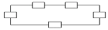
- 성(star)형
- 버스(Bus)형
- 로터리(Rotary)형
- 링(Ring)형
(정답률: 59%)
88. 초당 발생한 신호의 변화 상태로 나타내는 변조속도의 기본 단위는?
- 비트(bit)
- 보(baud)
- 패킷(packet)
- 셀(cell)
(정답률: 54%)
89. 정보통신시스템의 서비스중 통신처리기능을 가장 적합하게 설명한 것은 ?
- 전자우편,통신망관리 체계의 기능
- 속도, 프로토콜 및 미디어 변환기능
- 각종 연산처리,데이터베이스갱신 및 검색기능
- 전송회선,교환 및 다중화 기능
(정답률: 18%)
90. 정보통신을 위해 한 시스템이 다른 시스템과 통신을 원활하게 수행할 수 있도록 해주는 통신 규약은 ?
- 인터페이스
- 통신소프트웨어
- 통신프로토콜
- 통신처리
(정답률: 72%)
91. 다음 통신회선 구성에 대한 설명 중 틀린 것은?
- 멀티 드롭에 사용되는 터미널은 주소 판단 기능과 데이터 블록을 일시 저장할 수 있는 버퍼를 가지고 있어야 한다.
- 다중화 방식에서 통신회선의 고장시 고장지점 이후의 터미널은 모두 운영 불능에 빠지는 단점이 있다.
- 포인트 투 포인트 방식은 멀티 드롭 방식보다 모뎀의 시설 수량을 줄일 수 있다.
- 멀티 포인트 방식을 멀티 드롭 방식이라고도 한다.
(정답률: 31%)
92. 홀수패리티가 부가된 7비트 ASCII 코드 D(1000001)의 송신 데이터는?
- 1000010
- 0100001
- 10000011
- 11000010
(정답률: 38%)
93. 다음 ISDN서비스중 실제로 단말을 조작하고 통신하는 이용자측에서 본 서비스는?
- 텔리서비스
- 베어러서비스
- 부가서비스
- D채널 비접속서비스
(정답률: 43%)
94. 다음 중 패킷(Packet)을 가장 잘 설명한 것은 ?
- 회선교환방식에 주로 사용되며, 주 스테이션 사이에 통신을 할 수 있는 경로가 제공되는 경우를 말한다.
- 전송 혹은 다중화의 목적으로 메시지를 정해진 크기의 비트 수로 나눈 다음 정해진 형식에 맞추어 만들어진 데이터의 블럭이다.
- 버스형망, 환형망, 성형망, 망형망 등의 어떤 망구조에서도 편리하게 사용할 수 있는 데이터 교환방식에 가장 적합한 전송회선이다.
- 경로 변경방식에 따라 교환기,통신회선 등의 장애가 발생할 경우에도 대체 경로를 선택할 수 있지만 네트워크의 신뢰성은 매우 낮다.
(정답률: 45%)
95. 다음 중 ISDN의 사용자 망 인터페이스에서 기준점이 아닌것은 ?
- Terminal(T)
- Rate(R)
- Terminal Adapter(TA)
- System(S)
(정답률: 36%)
96. HDLC(High level Data Link Control)프로토콜에 대한 설명으로 옳지 않은 것은 ?
- 흐름 및 오류제어를 위한 방식으로 ARQ를 사용할 수 있다.
- 링크는 점대점,다중점,및 루프 형태로 구성할 수 있다.
- 특정 문자 코드에 따라서 필드의 해석이 달라지므로 코드에 의존성을 갖는다.
- 단방향, 반이중, 전이중 방식의 통신방식을 제공한다.
(정답률: 54%)
97. 통신망의 형태란 통신망 내에 위치한 여러 장치들 사이의 연결 모양을 지칭하는데 다음 중에서 대표적인 통신망 형태가 아닌 것은?
- 스타형(Star)
- 링형(Ring)
- 사각형(Square)
- 버스형(Bus)
(정답률: 78%)
98. 다음 중 미국의 군사용방공시스템으로 사용된 최초의 데이터통신시스템은 ?
- ARPA
- CTSS
- SABRE
- SAGE
(정답률: 49%)
99. ISDN의 베어러 서비스에 해당되는 것은 ?
- 델레텍스
- 혼합모드
- 비디오텍스
- 회선교환
(정답률: 35%)
100. 정보통신시스템에서 전송방식에 따라 직렬병렬과 병렬전송이 있다. 이 두가지 전송방법중 실제 정보통신 시스템에서 직렬전송방식을 채택하는 이유는 ?
- 전송속도가 빠르기 때문이다
- 터미널의 구성이 간단하기 때문이다
- 전송매체의 구성비용이 적게들기 때문이다
- 에러(오류)정정이 쉽기 때문이다
(정답률: 33%)